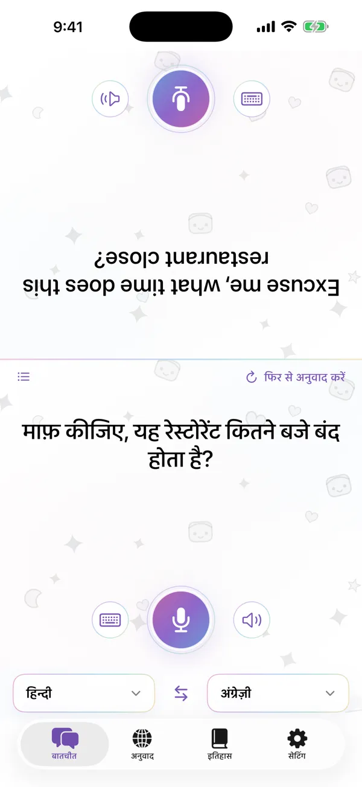

आमने-सामने बात करें
स्क्रीन दो हिस्सों में बँट जाती है और सामने वाले का हिस्सा उलटा हो जाता है, ताकि आप फ़ोन को अपने बीच रख सकें। बोलें या टाइप करें, और हर कोई अनुवाद अपनी भाषा में पढ़े।
- डिवाइस पर वाक् पहचान
- कोई भी वाक्य दोबारा सुनें
- अनुवाद बोलकर सुनाता है